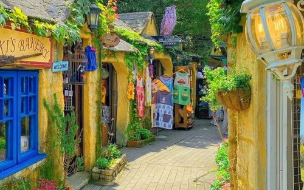
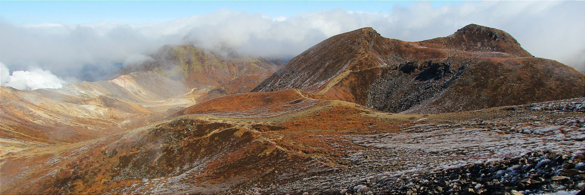
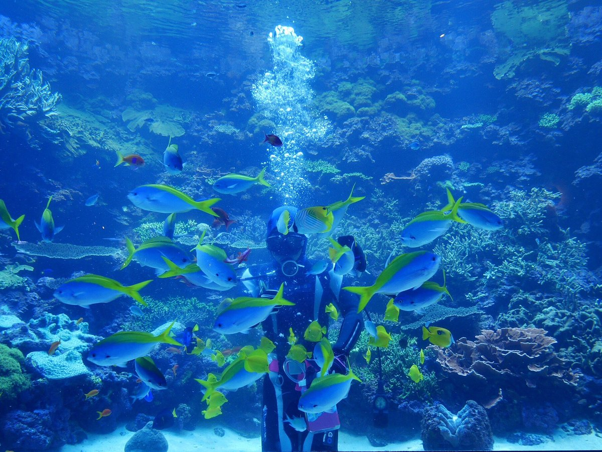

A calm and scenic escape surrounded by nature.
Oita is a quieter prefecture known for its natural landscapes, mountains, and hot springs. It offers a more local and authentic side of Japan, away from heavy tourism. Life here moves at a slower pace, and the environment feels more grounded and peaceful. It’s a place where nature plays a major role in everyday life.



Calm, nature-focused, refreshing
Oita is perfect for those who prefer calm surroundings and natural beauty. It’s ideal for relaxing, focusing, and living a less stressful lifestyle